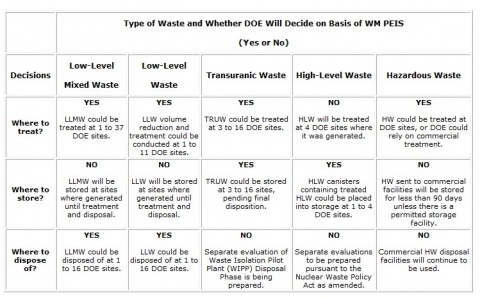

The Final Waste Management Programmatic Environmental Impact Statement (WM PEIS) is a nationwide study examining the environmental impacts of managing more than 2 million cubic meters of radioactive wastes from past, present, and future DOE activities. The WM PEIS will assist the U.S. Department of Energy (DOE) in improving the efficiency and reliability of management of its current and anticipated volumes of radioactive and hazardous wastes and will help DOE continue to comply with applicable laws and regulations and protect workers, public health and safety, and the environment. The WM PEIS allows the public and DOE decision makers to make comparisons of the impacts of various potential configurations for the management of DOE waste. The goal is a nationwide strategy to treat, store, and dispose of the wastes in a safe, responsible, and efficient manner that minimizes the impacts to workers and the public. Nevertheless, there will always be legitimate questions regarding waste management activities at certain sites. DOE understands and appreciates these concerns and will carefully consider them in strategic decisions.
Wastes analyzed in the WM PEIS result primarily from nuclear weapons production and related activities. Wastes produced from nuclear weapons production and related activities are categorized into five waste types. These are low-level mixed waste (LLMW), low-level waste (LLW), transuranic waste (TRUW), high-level waste (HLW), and hazardous waste. Environmental restoration (ER), another activity results in waste generation, is reviewed but not analyzed in the WM PEIS.
DOE needs to enhance the management of its current and anticipated inventories of LLMW, LLW, TRUW, HLW, and HW in order to ensure safe and efficient control of these wastes, to comply with all applicable Federal and State laws, to protect public health and safety, and to protect the environment. Each waste type has unique physical characteristics and regulatory requirements and accordingly is managed separately. For each waste type, facilities are needed to treat, store, and dispose of the waste. For the first time, DOE has examined in an integrated fashion not only the impacts of complex wide (i.e., across the DOE complex) waste management alternatives for each waste type but also the specific cumulative impacts from all the waste facilities at a given site. In this context, management of these wastes includes:
- Pollution prevention
- Identifying/contracting with private vendors to manage waste
- Modifying existing waste management facilities or constructing new facilities at particular sites
- Operating existing, modified, or new waste management facilities at those sites
- Transporting waste among waste management facilities, as necessary
- Handling, surveillance, and maintenance
The study provides information on the impacts of various alternatives, which DOE will use to decide at which sites to locate additional treatment, storage, and disposal capacity for each waste type. However, the location of a facility at a selected site will not be decided until completion of a site wide or project-specific National Environmental Policy Act (NEPA) review.
Seventeen major sites were analyzed in the WM PEIS because they meet one or more of the following criteria: (1) they are candidates to receive waste generated off site; (2) they are candidates to host disposal facilities; (3) they manage HLW; or (4) they were included to be consistent with the federal Facilities Compliance Act process. The 17 major sites are: Argonne National Laboratory-East (ANL-E), Brookhaven National Laboratory (BNL), Fernald Environmental Management Project (FEMP), Hanford Site (Hanford), Idaho National Engineering Laboratory (INEL), Lawrence Livermore National Laboratory (LLNL), Los Alamos National Laboratory (LANL), Nevada Test Site (NTS), Oak Ridge Reservation (ORR), Paducah Gaseous Diffusion Plant (PGDP), Pantex Plant (Pantex), Portsmouth Gaseous Diffusion Plant (PGDP), Rocky Flats Environmental Technology Site (RFETS), Sandia National Laboratories-New Mexico (SNL-NM), Savannah River Site (SRS), Waste Isolation Pilot Plant, and West Valley Demonstration Project (WVDP).
To help DOE decide at which sites it should locate waste management facilities, the WM PEIS considers four categories of alternatives for each waste type: (1) a No Action Alternative that is generally consistent with current practice but with no management improvements; (2) a Decentralized Alternative that would, in general, result in wastes being managed where they are currently generated or stored; (3) a Regionalized Alternative that would consolidate waste management at fewer sites throughout the nation than under the Decentralized Alternative; and (4) a Centralized Alternative that would consolidate waste management at only one or two sites. For certain waste types, DOE considers more than one Regionalized or Centralized Alternative to present a wide variety of options on the number and location of sites that could manage wastes.
WASTE TYPES CONSIDERED IN THE WM PEIS
DOE is responsible for managing large inventories of LLMW, LLW, TRUW, HLW, and HW. DOE manages each of these waste types separately because they contain different components, have different levels of radioactivity, and must meet different regulatory requirements. Updated information on waste volumes for LLW, LLMW, and TRUW at DOE's sites is included in Appendix I of the WM PEIS. DOE addressed the management of spent nuclear fuel in a separate programmatic environmental impact statement and its subsequent Records of Decision.
DOE defines its radioactive wastes based partially on how they are derived. Thus, waste types may share certain characteristics; for example, transuranic elements can be found in LLMW, LLW, TRUW, and HLW.
In addition, the wastes within each category come from diverse sources and can have different characteristics. Thus, some wastes within a waste type may need to be managed much differently from other wastes within that same waste type. For example, LLMW and LLW are categorized as either alpha or non-alpha waste, depending on whether the waste contains transuranic radionuclides with half-lives greater than 20 years and with alpha particle activity of between 10 and 100 nanocuries per gram. Because of the long-term health risks associated with the long-lived transuranic radionuclides, regulatory requirements mandate different treatment or disposal processes for alpha and for non-alpha waste. TRUW is an alpha waste with activity greater than 100 nanocuries per gram. There are typically two categories of LLMW, LLW, and TRUW -- "contact-handled" (CH) and "remote-handled"(RH). The difference between the two categories is due to the concentration of radioactive materials. RH waste typically requires additional shielding and containment to protect workers and the public. Most LLMW, LLW, and HW can be disposed of by shallow burial provided that they are first treated and then placed in a properly regulated disposal facility. LLMW, HLW, HW, and some TRUW are all subject to the requirements of the Resource Conservation and Recovery Act (RCRA).
The following introductory sections define and discuss each of the waste types considered in the WM PEIS, current waste volumes, and the four categories of alternatives.
LOW-LEVEL MIXED WASTE
Low-level mixed waste (LLMW) contains both hazardous and low-level radioactive components. The hazardous components in LLMW are subject to RCRA, whereas the radioactive components are subject to the Atomic Energy Act (AEA). LLMW is characterized as either CH or RH and as alpha or non-alpha.
LLMW results from a variety of activities, including the processing of nuclear materials used in nuclear weapons production and energy research and development activities. The WM PEIS evaluates management of approximately 82,000 cubic meters (m3) of LLMW that are currently stored and an estimated 137,000 cubic meters that are expected to be generated over the next 20 years (excluding LLMW that could be generated as a result of environmental restoration activities), for a total of approximately 219,000 cubic meters. While commercial and DOE facilities are currently insufficient to treat DOE's entire inventory of LLMW, some commercial treatment capacity does exist, and with sufficient incentives, it is assumed that commercial capacity could increase to meet demand. The WM PEIS addresses the treatment and disposal of LLMW; storage of LLMW is not addressed because RCRA prohibits storage of untreated waste except to facilitate proper recovery, treatment, or disposal. The WM PEIS addresses the transportation impacts associated with moving LLMW to treatment, storage, and disposal sites.
LOW-LEVEL WASTE
Low-level waste (LLW) includes all radioactive waste that is not classified as HLW, spent nuclear fuel (fuel discharged from nuclear reactors), TRUW, uranium and thorium mill tailings or waste from processed ore. It does not contain HW constituents. Most LLW consists of relatively large amounts of waste materials contaminated with small amounts of radionuclides, such as contaminated equipment (e.g., gloveboxes, ventilation ducts, shielding, and laboratory equipment), protective clothing, paper, rags, packing material, and solidified sludges. LLW is further categorized as CH or RH and as alpha or non-alpha on the basis of the types and levels of radioactive emissions. However, most LLW contains short-lived radionuclides and generally can be handled without additional shielding or remote handling equipment. DOE has an inventory of approximately 67,500 cubic meters of LLW in storage, and approximately 1,440,000 cubic meters are expected to be generated during the next 20 years (excluding LLW that could be generated as a result of environmental restoration activities), for a total of approximately 1,500,000 cubic meters. The WM PEIS also addresses the transportation impacts associated with moving LLW to treatment, storage, and disposal sites.
TRANSURANIC WASTE
TRUW is waste containing more than 100 nanocuries of alpha-emitting transuranic isotopes per gram of waste, with half-lives greater than 20 years (atomic number greater than 92), except for (a) HLW, (b) waste that DOE has determined, with the concurrence of the Administrator of the EPA, does not need the degree of isolation required by 40 CFR 191, or (c) waste that the U.S. Nuclear Regulatory Commission (NRC) has approved for disposal on a case-by-case basis in accordance with 10 CFR 61. TRUW is generated during research, development, nuclear weapons production, and spent nuclear fuel reprocessing.
TRUW, some of which also contains hazardous chemicals, has radioactive elements such as plutonium, with lesser amounts of neptunium, americium, curium, and californium. These radionuclides generally decay by emitting alpha particles. Like LLMW and LLW, TRUW also contains radionuclides that emit gamma radiation, requiring TRUW to be managed as either CH or RH. Approximately half of the TRUW analyzed is mixed waste containing both radioactive elements and hazardous chemicals regulated under RCRA.
DOE has approximately 68,000 cubic meters of stored TRUW that can be retrieved and expects to generate about 64,000 cubic meters over the next 20 years (excluding TRUW that could be generated as a result of environmental restoration activities), for a total of about 132,000 cubic meters. DOE is currently proceeding with plans for TRUW disposal at a proposed geologic repository called the Waste Isolation Pilot Plant (WIPP) near Carlsbad, New Mexico. To evaluate whether to dispose of TRUW at WIPP and what level of treatment is needed for WIPP to perform as designed, DOE is preparing the WIPP Disposal Phase Supplemental EIS (SEIS-II) (draft issued Nov. 1996). Therefore, the WM PEIS addresses only the selection of DOE sites for treatment and storage facilities for TRUW. It also addresses the transportation impacts associated with moving TRUW to treatment, storage, and disposal sites.
HIGH-LEVEL WASTE
High-level waste (HLW) is the highly radioactive waste resulting from reprocessing spent nuclear fuel and irradiated targets from reactors. HLW is liquid before it is treated and solidified. Some of its elements will remain radioactive for thousands of years. HLW is also a mixed waste if it contains hazardous components that are regulated under RCRA. DOE has or will have generated about 378,000 cubic meters of HLW stored in large tanks.
DOE is proceeding with plans to treat HLW by processing it into a solid form that would not be readily dispersible into air or leachable into groundwater or surface water. The treatment process is called vitrification. The environmental impacts of vitrifying HLW have been analyzed in previous DOE environmental impact statements. Vitrification would generate approximately 21,600 canisters from the current inventory of HLW. Canisters are assumed to vary in volume between 0.85 cubic meter and 1.26 cubic meters. DOE plans to dispose of the HLW canisters in a geologic repository. The WM PEIS addresses only the storage of treated HLW prior to its ultimate disposal in such a repository. It also addresses the transportation impacts associated with moving HLW to storage sites.
HAZARDOUS WASTE
Hazardous waste (HW) is defined under RCRA as a solid waste, or a combination of solid wastes, that may (a) significantly contribute to an increase in mortality because of its quantity, concentration, or physical, chemical, or infectious characteristics or (b) pose a potential hazard to human health or the environment when improperly treated, stored, or disposed of. RCRA defines a "solid" waste to include solid, liquid, semisolid, or contained gaseous material.
The quantities and types of HW generated by DOE's activities vary considerably and include acids, metals, solvents, paints, oils, rags contaminated with hazardous cleaning compounds, and other hazardous materials that are byproducts of routine maintenance, degreasing, and machine shop operations. Almost 99% of DOE's HW is wastewater and is treated at DOE sites. The remaining 1%, predominantly solvents and cleaning agents, is treated at commercial facilities. The WM PEIS evaluates the treatment of the 1% of HW that is not wastewater.
Over the next 20 years, DOE expects to generate approximately 69,000 cubic meters of non-wastewater HW. The WM PEIS addresses only the impacts of treating HW and the impacts associated with moving HW to treatment sites.
DECISIONS
Table 1 summarizes decisions DOE needs to make with respect to the treatment, storage, or disposal of these five types of waste. The alternatives describe the roles of the different sites where waste management facilities could be located.
Table 1 - Decisions DOE Will Make Based on Evaluations in the WM PEIS

DECISION CRITERIA
Factors and criteria were used by DOE to evaluate alternatives in order to select a preferred alternative for each waste type considered in the WM PEIS. The factors used by DOE include: Consistency; Cost; Cumulative Impacts; DOE Mission; Economic Dislocation; Environmental Impact; Equity; Human Health Risk; Implementation Flexibility; Mitigation; Regulatory Compliance; Regulatory Risk; Site Mission; and Transportation. DOE also considered public comments in evaluating each of the alternatives.
ENVIRONMENTAL RESTORATION WASTES
The term environmental restoration (ER) refers to the remediation of contaminated media and facilities at DOE sites. Contaminated media consist of contaminated soils, water, debris, and buildings; the volumes of such materials can be large at some sites. DOE continues to pursue environmental restoration at its sites; however, environmental restoration is not included in the scope of the WM PEIS. The decisions DOE must make about environmental restoration generally are not programmatic but instead are site specific.
Certain wastes generated during environmental restoration activities will be transferred to the waste management program for further treatment or disposal. These wastes are referred to as ER transferred wastes. The volume of ER transferred waste depends on the extent of environmental restoration at a site, which then depends on several factors, including decisions regarding the use of the site in the future and the amount of cleanup necessary to permit that use; the balance between containment and removal strategies at a site; and the availability of commercial or DOE facilities to treat or dispose of waste. Current ER waste estimates are derived from a basecase scenario for environmental response actions at DOE sites.
Of the total volume of contaminated material from more than 10,000 contaminated areas at DOE sites (estimated to be approximately 58 million cubic meters), approximately 90% is contaminated soils. In situ remediation activities -- such as capping contaminated soils in a landfill or entombing processing facilities, buildings, and reactors -- would generate relatively small volumes of waste requiring further management.
However, environmental restoration activities that involve removing contaminants from environmental media can produce HW, LLW, LLMW, and TRUW. Although DOE has made preliminary estimates about how much of each of these wastes environmental restoration may generate at a particular site, it has almost no information on how chemical or radiological contaminants vary within each of these broad types of environmental restoration wastes. Without the basic information on the nature and composition of these wastes, DOE cannot determine the facilities needed to manage them or the impacts that the operation of those facilities might have on the environment.
Potential impacts of the addition of ER transferred waste on the WM PEIS alternatives are determined by such factors as waste management facility capacity, operational costs, and risks to workers and offsite populations. At most DOE sites, the treatment of ER transferred wastes is not expected to affect comparisons regarding the WM PEIS alternatives. Management of ER transferred waste could be accomplished by using available operational capacity for up to 30 years at waste management facilities, providing additional waste management facilities, or upgrading the planned facilities to accept increased amounts of wastes. Because DOE does not have sufficient information about the ER transferred wastes, it cannot evaluate their impacts in the same manner as the impacts of wastes evaluated in the WM PEIS. DOE does not have enough information on the volume or contaminant composition of these wastes to perform an analysis of the impacts of treating, storing, or disposing of these wastes.
The cumulative impact analysis of the WM PEIS describe the DOE Environmental Restoration Program, provide estimates of waste volumes, and identify the potential effects of the addition of ER transferred waste on the WM PEIS analysis. Assumptions and uncertainties involved in the analysis are also provided.
For more information, go to the Department of Energy NEPA Web Site .